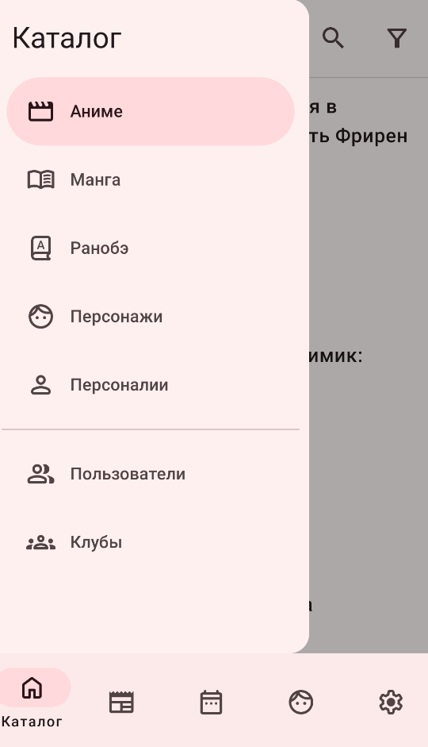

我为什么装了一个俄语圈的动漫客户端——ShikiApp 上手体验
ShikiApp 是 Shikimori 社区的第三方安卓客户端，Kotlin 开源，用了一周说说目录检索、声优反查、追番日历这些功能到底好不好用。
前阵子跟朋友聊番剧，他突然问我："你有没有在用俄语圈那个 Shikimori？"我当时一脸懵——Anilist、MyAnimeList 这些主流的倒是听过，俄语圈的动漫社区是个什么路子？朋友给我递了一个安装包，说"试试这个客户端，比浏览器好用多了"。
于是我就把 ShikiApp 装上了。
说实话，一开始没抱太大期望。一个第三方客户端，还是俄语圈的，界面会不会全是西里尔字母看不懂？功能会不会跟 MAL 客户端大同小异？抱着试试看的心态打开之后，发现事情没我想的那么简单。
安装那点事——跨渠道签名冲突真的会劝退人
先从安装说起。ShikiApp 同时在 GitHub、RuStore、IzzyOnDroid、F-Droid 四个渠道分发，理论上都是同一个包名，应该能互相覆盖。但我自己亲测了一下——先从 GitHub 装了一个，后来想换成 IzzyOnDroid 版本（听说更新更快），结果系统直接弹"签名不一致，拒绝覆盖安装"。
这倒不是 ShikiApp 本身的问题，不同渠道的打包流程用的签名 key 可能不完全一样，国产 ROM 对签名不同的包又尤其严格，MIUI 和 ColorOS 上这种情况更常见。解决办法也简单——卸载旧版再装新的就行，而且追番列表、收藏、私信这些数据全在云端账号里，卸载不丢数据，只是下次打开要重新登录一下。我后来干脆锁定了一个渠道，安装包从官方下载拿，省得来回折腾。
第一眼界面：俄语导航条反而让我有点新鲜感
打开之后默认停在新闻流页面，顶部标题栏写着大大的「Новости」（新闻）。底部一排导航按钮从左到右依次是搜索、目录、日历、列表、消息、新闻、个人中心——全是俄文，但图标画得挺清楚，用两次就记住了。我本来以为会有英文切换选项，找了一圈没找到，索性也不找了，反正核心操作就那几个按钮。
新闻流本身没什么好说的，就是一个信息流，显示动画化发表、PV 公开、站点公告这些消息。每天花两分钟往下滚一遍，能第一时间知道自己关注的作品有没有新动作。对追番的人来说，这一点挺实用——比天天刷 Twitter 或微博找消息省事多了。
目录检索：声优反查作品这个功能真的戳到我了
说几个让我印象深刻的功能。第一个就是目录板块的条目体系——这是我在其他动漫客户端里没见过的设计。
Shikimori 的条目不是只有"动漫"和"漫画"两类，它分成五大类：动漫（Аниме）、漫画（Манга）、轻小说（Ранобэ）、角色（Персонажи）、人物（Персоналии）。前五类好理解，后两类是它的特色——角色是动漫里的虚拟人物，有身高、生日这些资料；人物是真实的创作者，声优、作者、导演都在里面。

"声优反查作品"这个操作就是在这里用的——先搜一个声优的名字，点进他的个人页面，底部会列出这位声优配过的全部角色。反过来也成立，在某个动漫详情页点角色名字，会跳到角色页面，那里列出了这位角色的全部声优出演。我上周就是用这个功能追着梶裕贵的配音表，一路发现了好几部之前没注意到的小众番。这个双向关联的设计，真的比单纯的"作品列表"有用太多——后来去Shiki文档翻了一下才弄明白，Shikimori 本身的条目体系就比其他动漫数据库完整得多。
追番日历：把"今天该看什么"从脑子里搬到手机上
第二个让我觉得贴心的是日历功能。底部导航栏有个「Календарь」按钮，点进去就是按月排的放送时间表。今天更哪部、明天更哪部，一目了然——对我这种追了二十多部番的人来说，不用再在脑子里记"这周星期三那部更新了没"，打开看一眼就知道。
追番列表（「Мой список」）也做得挺细。每部作品可以标"在看""想看""已看完""搁置"四种状态，还能打评分。这些数据全部实时同步到 Shikimori 云端，换手机或者卸载重装都不会丢——只要账号还在就行。我之前用 MAL 客户端的时候就吃过"本地数据没同步"的亏，ShikiApp 这一点让我踏实不少。
那些让我觉得"差点意思"的地方
说完好的，也说几个别扭的。
首先是俄语界面这个事——虽然用两次就记住了，但搜索框只能搜俄文名或罗马音，我用中文搜《进击的巨人》是搜不到的，得输入"Shingeki no Kyojin"或者俄文名"Атака Титанов"才行。这对不习惯的人来说是个门槛。
然后是它完全依赖 Shikimori 网站的接口——说白了，它的官网上对自己的定位写得也很直白——就是网站账号的随身入口，不是独立的动漫平台。网站抽风或者被墙，客户端就一片空白。我这一周里就碰到过一次 Shikimori 站点短暂不可达，打开客户端什么都加载不出来，等了大概十分钟才恢复。如果你所在的网络环境访问 Shikimori 本身就困难，那这个客户端用起来会很痛苦。
还有一个小问题——新闻流里的讨论串点进去会跳转到 Shikimori 网站，而不是在客户端内部打开。这个跳转逻辑虽然合理，但体验上确实有点割裂。
总结：适合谁，不适合谁
用了一周下来，我的结论是这样的：
如果你是一个喜欢探索小众番、对声优阵容敏感、又想找一个不同于英语圈社区的动漫爱好者，ShikiApp 值得装一下——目录检索的双向关联、追番日历、不丢数据的云端同步，这几个功能确实能解决实际问题。尤其是声优反查那个点，我至今还在给身边同好安利。
但如果你更习惯 Anilist 或 MAL 的生态、只看主流番、或者所在环境访问 Shikimori 本身就有困难，那 ShikiApp 可能帮不到你什么——俄语界面的门槛、对 Shikimori 网站的强依赖，这两个问题不是靠设计能解决的。
它不是什么"神器"，也不是"最好的动漫客户端"，就是一个把 Shikimori 社区的核心功能搬到手机上的第三方开源应用。定位清晰，功能够用，该做的事做到了，不该碰的也没碰——这在客户端里已经算难得了。
对了，还有个事没说——这个客户端完全免费，代码在GitHub上公开，GPL-3.0 许可，独立开发者 pewaru-333 维护。我个人是觉得这种社区驱动的开源项目挺值得支持的，毕竟不是谁都能花时间写一个 Kotlin 应用出来给大家免费用。整理这份资料时顺手同步到了Gitee和GitCode，国内访问会快不少。